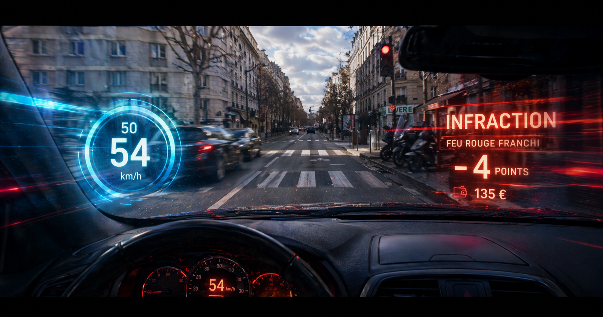
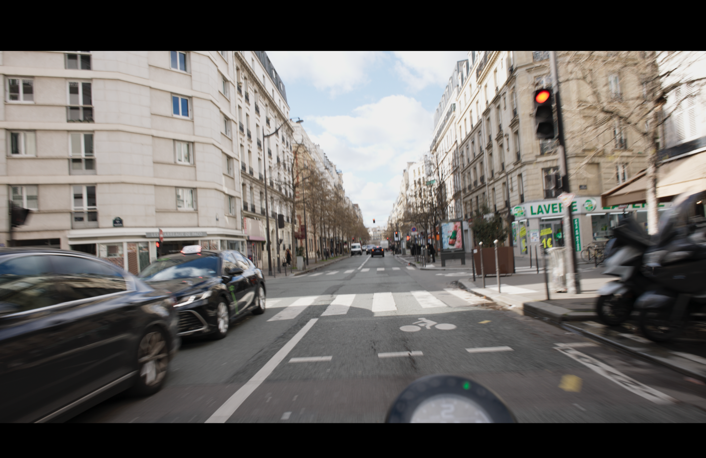
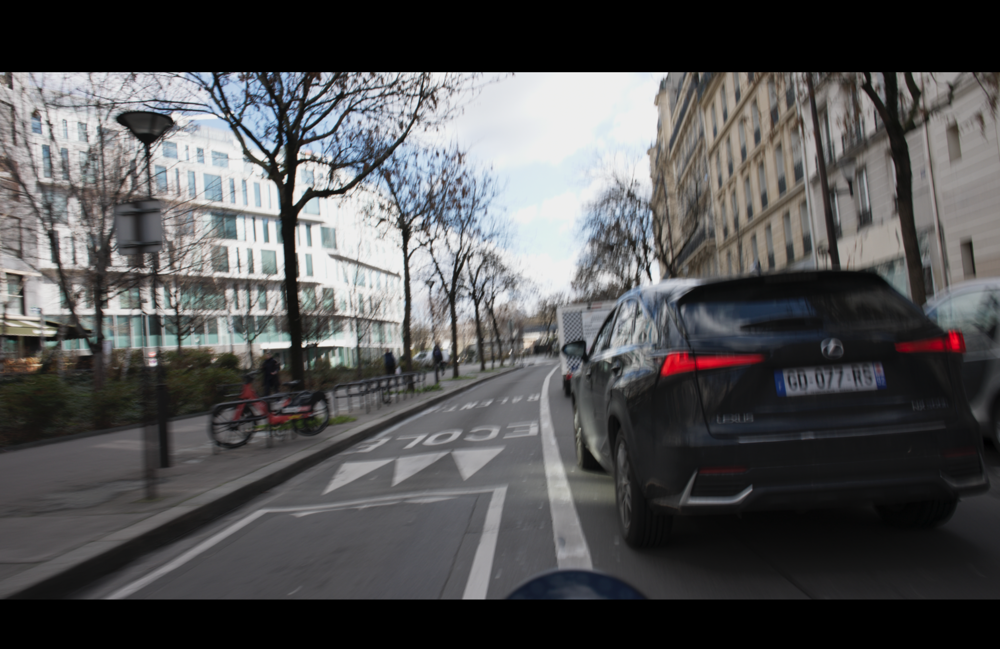
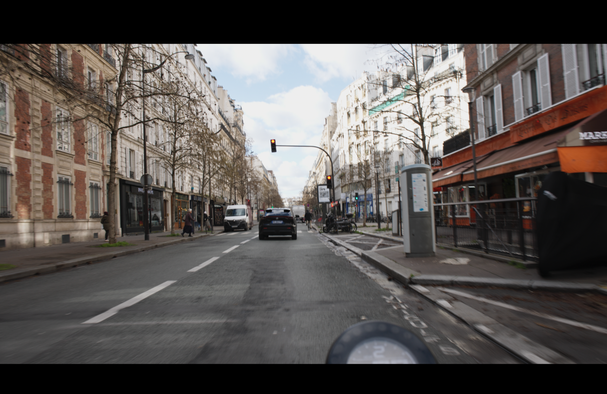
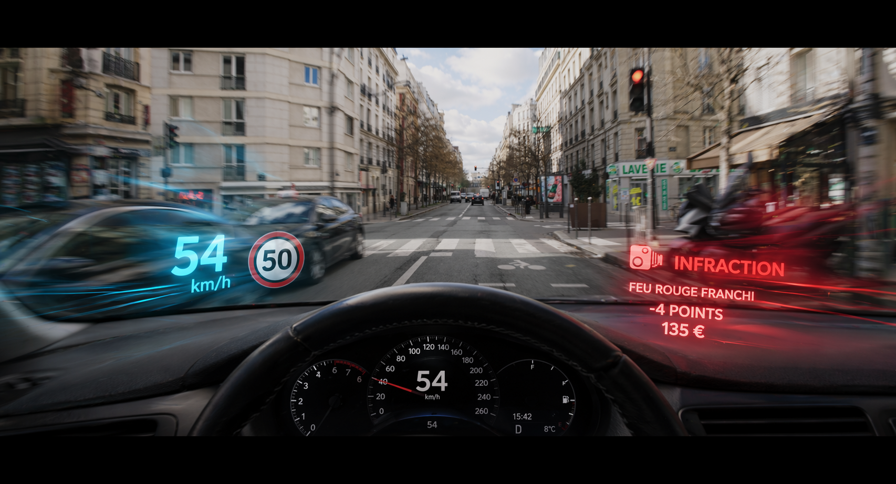
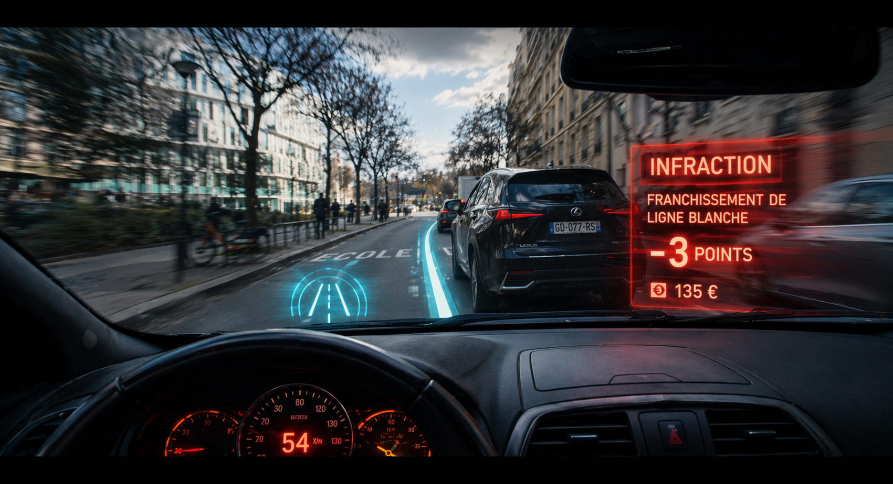
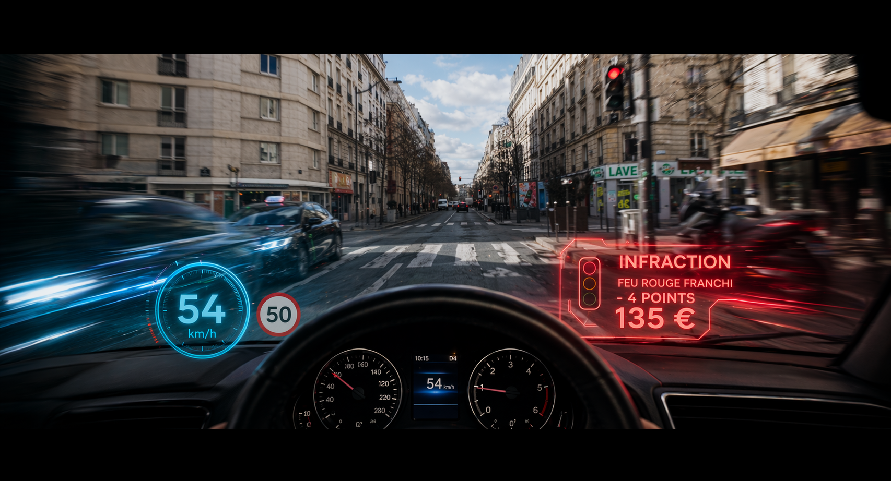

Windshield VFX and driving sequence

A clear proof of concept before committing to the shoot.
Using existing motorcycle plates, the team can validate the in-car point of view, the windshield graphics, the VFX logic and the audience readability before committing to a dedicated car shoot.
Motorcycle plates → car interior integration → windshield infraction graphics
A preparation workflow used to test a title-sequence idea: turning live-action motorcycle plates into a driver’s point of view, while keeping the driver unseen and making each traffic offence instantly readable for the audience.
Clean motorcycle plates were provided as turning material. The first step was to identify which angles could support a believable in-car point of view while preserving motion, focal logic and street readability.



A car interior was introduced over the selected motorcycle plates to simulate the final point of view from inside the vehicle. This allowed the driving idea to be tested before committing to a dedicated car shoot.

The second layer of exploration focused on the visual language of the infractions: red lights crossed, lane departures, warnings and penalties. The graphics were developed as on-windshield overlays, with motion streaks and a recent video-game sensibility, so the narrative could be understood instantly.

The purpose was not only aesthetic. This early visualization helped clarify the narrative device, validate the framing logic, and align direction, cinematography, production and VFX intentions before shooting.
The chosen direction combines a clear in-car viewpoint, minimal visibility of the driver, and a strong infraction interface embedded in the windshield space. It establishes the concept of the sequence in a direct, readable and cinematic way.

Test the idea before spending production time.
The visual preparation turns existing plates into a clear proof of concept, helping production decide what needs to be shot, what can be handled in VFX, and whether the sequence is readable for the audience.